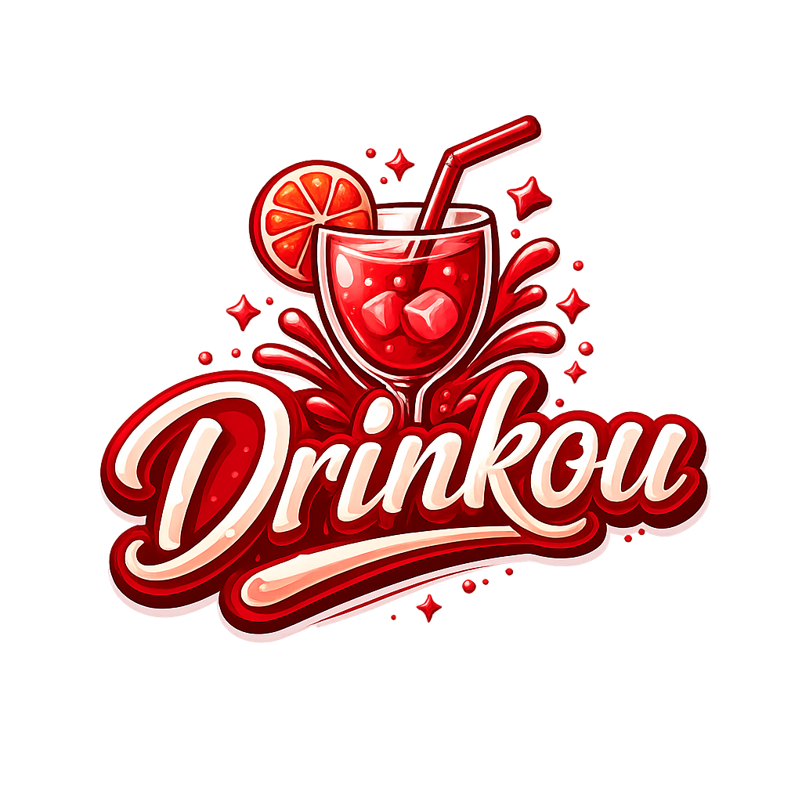

O Drinkou foi criado para ser o seu guia definitivo no mundo das bebidas. Mais do que uma adega online, somos um clube de degustação focado em explorar novos sabores, compartilhar avaliações detalhadas sobre rótulos clássicos e artesanais, e proporcionar uma experiência interativa para quem aprecia um bom brinde